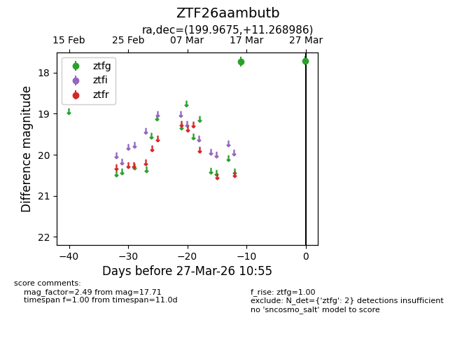
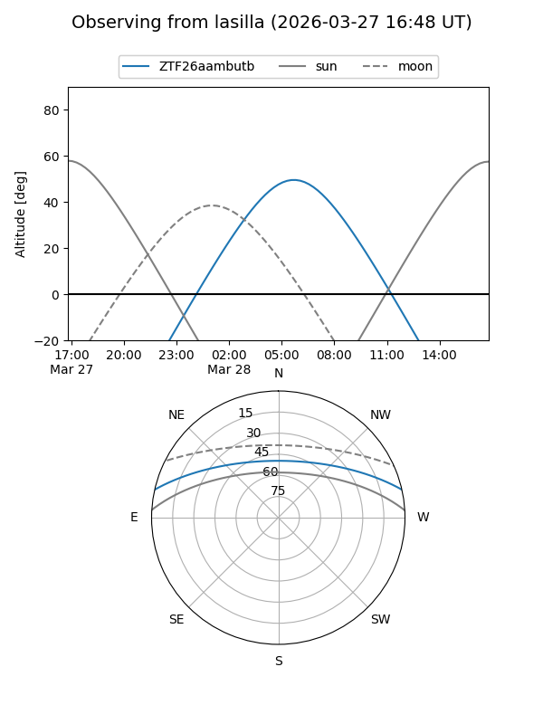
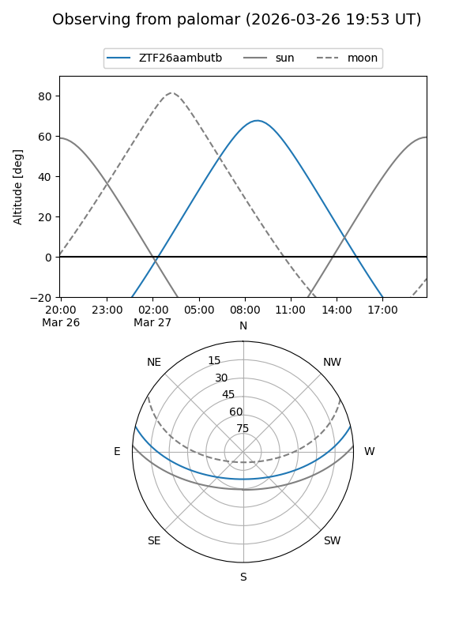

ZTF26aambutb
Target ZTF26aambutb at 2026-03-27 10:58
Aliases and brokers:
FINK: link
Lasair: link
ALeRCE: link
alt names
ZTF26aambutb (ztf,fink_ztf)
Coordinates:
equatorial (ra, dec) = 199.9675,+11.26899
equatorial (HMS+DMS) = 13:19:52.21,+11:16:08.35
galactic (l, b) = (327.1470,+72.79019)
Flags:
Photometry:
last ztfg=17.71
2 ztfg detections
Lightcurve

Visibility


Additional plots